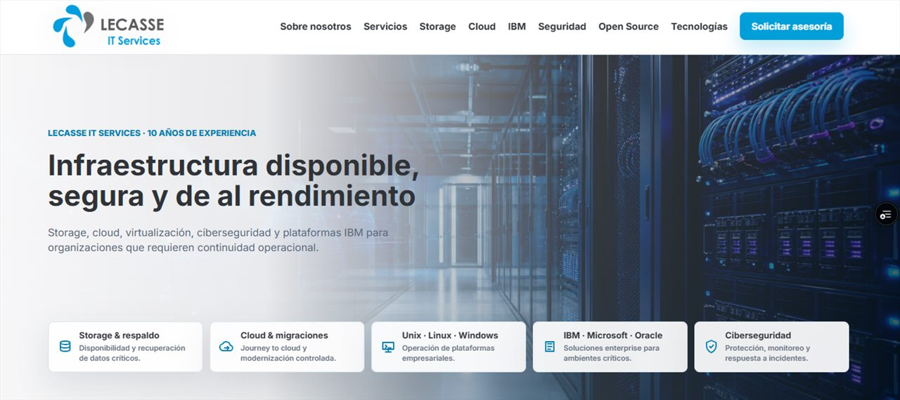

Caso de estudio · Página web
Lecasse IT Services
Presencia digital para servicios tecnológicos, creada para ordenar la propuesta de valor, presentar capacidades y reforzar una imagen profesional ante nuevos clientes.
Contexto
Lecasse IT Services necesitaba una página web única para presentar sus servicios tecnológicos y entregar un punto de contacto profesional.
Problema
La oferta técnica requería una estructura clara para que un visitante comprendiera las capacidades del negocio sin recorrer información dispersa.
Solución desarrollada
Sitio web corporativo responsive con propuesta de valor, servicios organizados por necesidad y llamados a la acción visibles.
Funcionalidades
- Portada con propuesta de valor.
- Servicios estructurados.
- Diseño adaptable.
- Formulario y accesos de contacto.
- SEO inicial.
Tecnologías
- HTML5
- CSS3
- JavaScript
- Vercel
Resultado verificable
La página está publicada en lecasse.vercel.app; su estructura responsive, contenidos y puntos de contacto pueden verificarse en línea.
Estado y acceso
Operativo. El sitio público puede revisarse directamente.